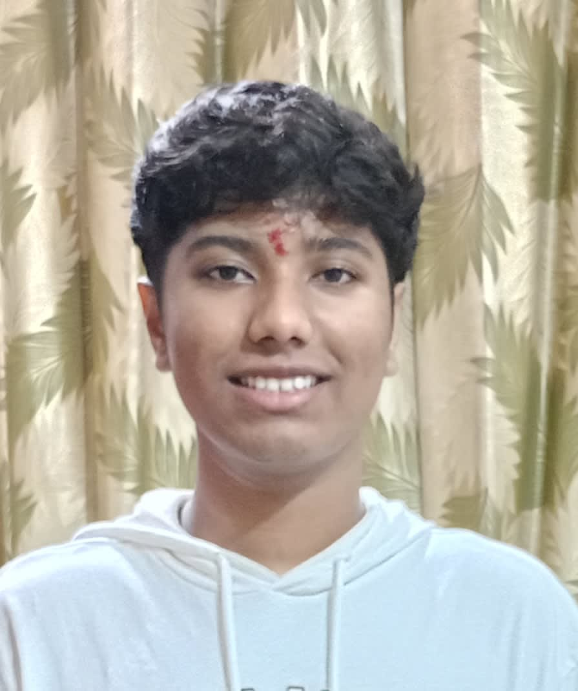
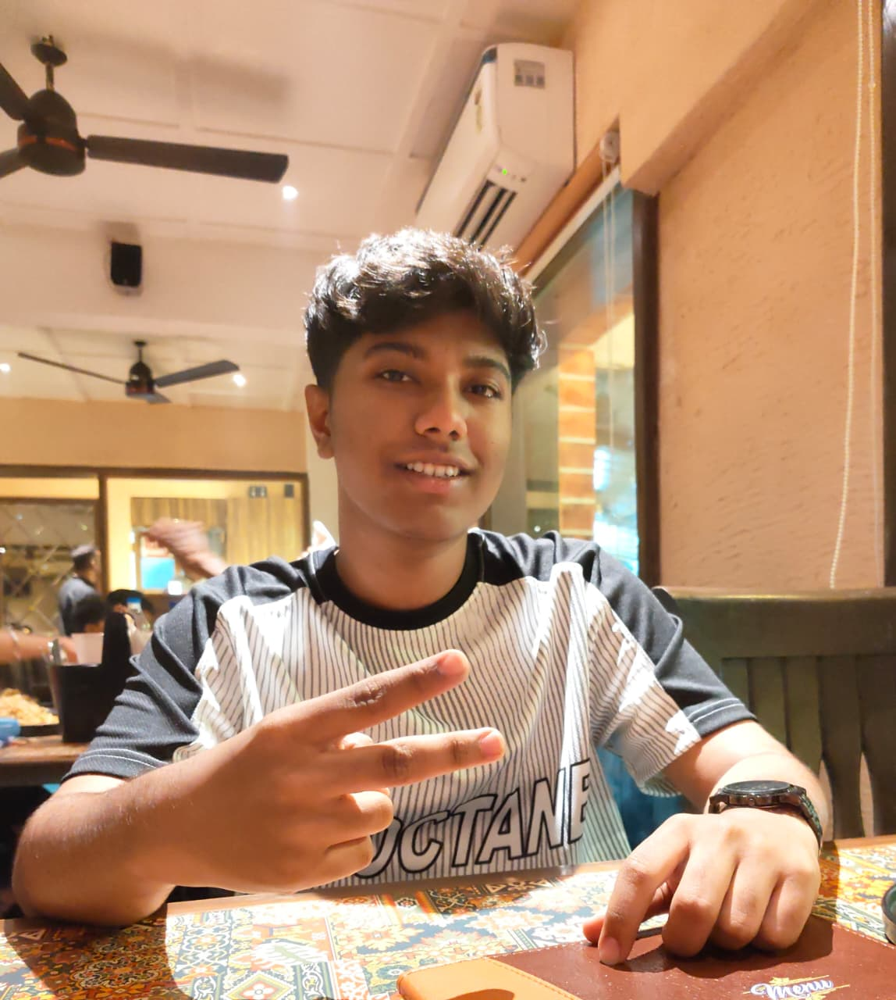

My name is Unmesh Parab. I am an FYBMS student at Aditya Institute Of Management Studies & Research, Borivali(W)
My hobbies include drawing sketches, gaming, watching Formula 1 and practicing racing on simulators. I am passionate about music and enjoy listening to it on quality speakers. I am also a car and bike enthusiast and enjoy making good coffee.
I consider myself a kind and welcoming person who listens deeply to conversations and believes in peace. I prefer calm environments such as being at home or sitting quietly on a beach. I believe my personality lies between introvert and extrovert, making me an ambivert. I believe in peace, personal growth, and the idea of a utopian world where people feel heard, valued, and included.
 